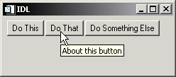
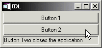

There are numerous ways to supply help and feedback to users of a widget application without the need to display a help file in an external window. The following techniques can augment, if not necessarily replace, a more complete online help file.
Tooltips are short text strings that appear when the mouse cursor is positioned over a button or draw widget for a few seconds. Often a tooltip is enough to remind a user of the function of a button, eliminating the need for the user to consult more extensive documentation.
|
 |
Tooltips are created by specifying a text string as the value of the TOOLTIP keyword to the WIDGET_BUTTON function:
DoneButton = WIDGET_BUTTON(base, VALUE='Done', $
TOOLTIP='Click here to close the application')
Note: Draw widgets can also display tooltips.
You can give users feedback about the status of an operation or the function of an interface element by updating a status line included in your widget interface. Status lines are generally located at the bottom of the interface, and can be updated as the user moves the mouse cursor over interface elements or as the status of the application changes.
|
 |
The following example demonstrates how a status line can be updated as the mouse cursor moves over a set of buttons. Similar code could update the value of the label widget as other events occur. To view the results, paste the code into an IDL editor window and save it as label_update.pro , then compile and run.
; Event-handler routine
PRO label_update_event, ev
; If the event is a tracking event, update the label widget.
IF (TAG_NAMES(ev, /STRUCTURE) EQ 'WIDGET_TRACKING') THEN BEGIN
WIDGET_CONTROL, ev.TOP, GET_UVALUE=label
WIDGET_CONTROL, ev.ID, GET_VALUE=val, GET_UVALUE=uval
WIDGET_CONTROL, label, SET_VALUE=uval
WIDGET_CONTROL, label, SET_VALUE=uval
ENDIF
; If the event is a button event, and comes from Button 2,
; then destroy the application.
IF (TAG_NAMES(ev, /STRUCTURE) EQ 'WIDGET_BUTTON') THEN BEGIN
WIDGET_CONTROL, ev.ID, GET_VALUE=val
IF (val EQ 'Button 2') THEN WIDGET_CONTROL, ev.TOP, /DESTROY
ENDIF
END
; Widget creation routine
PRO label_update
base=WIDGET_BASE(/COLUMN, XSIZE=200)
; Set the button widgets to generate tracking events, so we
; know when the mouse cursor is over them.
b1 = WIDGET_BUTTON(base, VALUE='Button 1', $
UVALUE='Button One does nothing', /TRACKING_EVENTS)
b2 = WIDGET_BUTTON(base, VALUE='Button 2', $
UVALUE='Button Two closes the application', /TRACKING_EVENTS)
label = WIDGET_LABEL(base, XSIZE=190, /SUNKEN_FRAME)
; Set the user value of the base widget equal to the widget ID
; of the label widget.
WIDGET_CONTROL, base, SET_UVALUE=label
; Realise the widgets and call XMANAGER.
WIDGET_CONTROL, base, /REALIZE
XMANAGER, 'label_update', base
END
To display larger amounts of text than will fit conveniently in a status line, you can include a text widget in your application’s interface. The process of updating the text widget’s value depending on user actions is similar to the process described in the status line example, above.
To display larger blocks of text that would not fit conveniently within the body of your application’s interface, consider using the XDISPLAYFILE procedure.